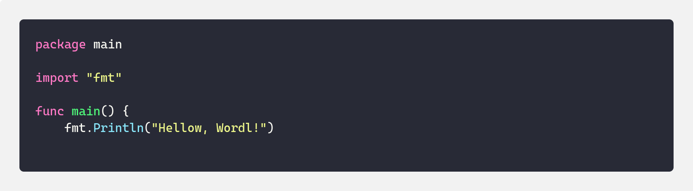
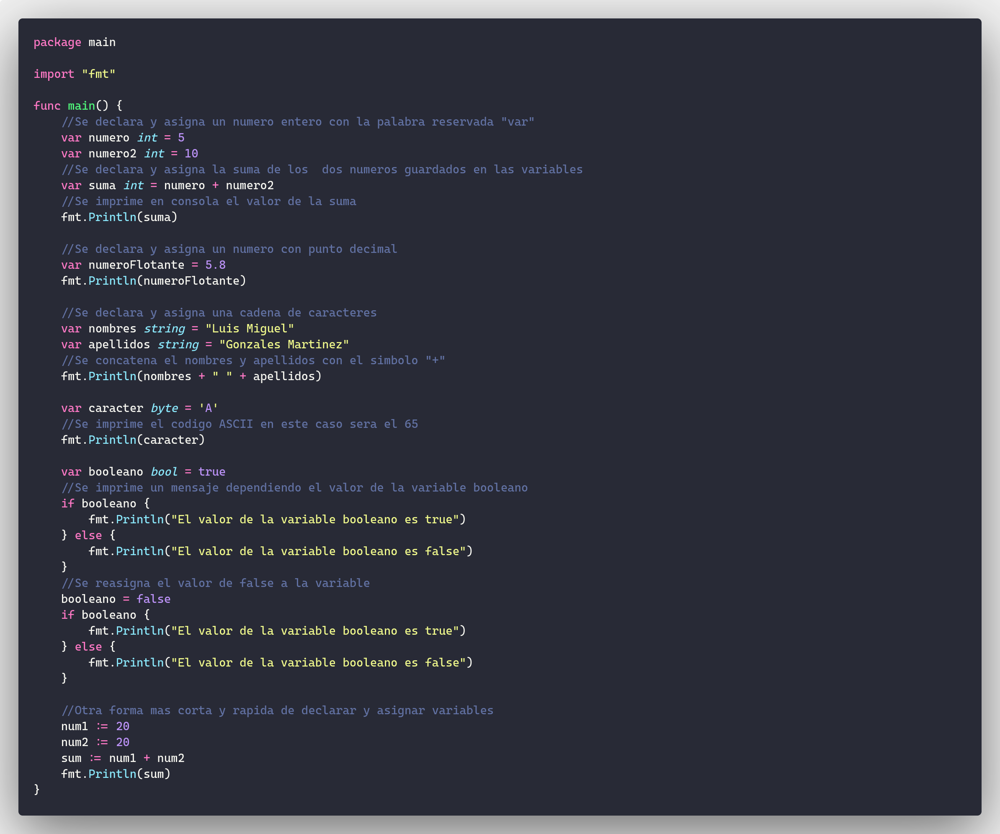

Instalacion
- Haga click en Download para descargar la ultima version de Go
Primer Programa(Hola mundo)
-
go init example/goSe creara un archivo go.mod el cual genera un modulo - Cree un archivo en su editor de texto favorito con el nombre hello y la extension go "hello.go"
-
Escriba el siguiente codigo en su editor
 -
go run hello.goEste comando correra el programa y debera ver en consola "Hello Word"
Tipos de Datos Variables
Se muestran a continuacion como se declara y asignan los varoles a las variables y algunos de sus tipos basicos
Arrays
Los Arrays son un tipo de estructura unidimensional y de un solo tipo de datos el cual se le debe de asignar una longitud y tipo de datos inicial. Pero Golang nos permite definir arrays con un limite infinito por decirlo asi.
Matrices
Las matrices son muy parecidos a los Array la unica diferencia es que estas pueden ser de 2 o mas dimensiones en este caso llegaremos hasta 3 dimensiones por su grado de complejidad que se genera despues de las 3 dimensiones